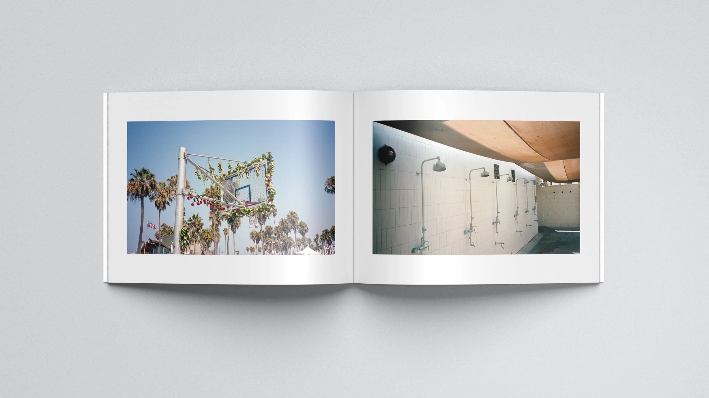
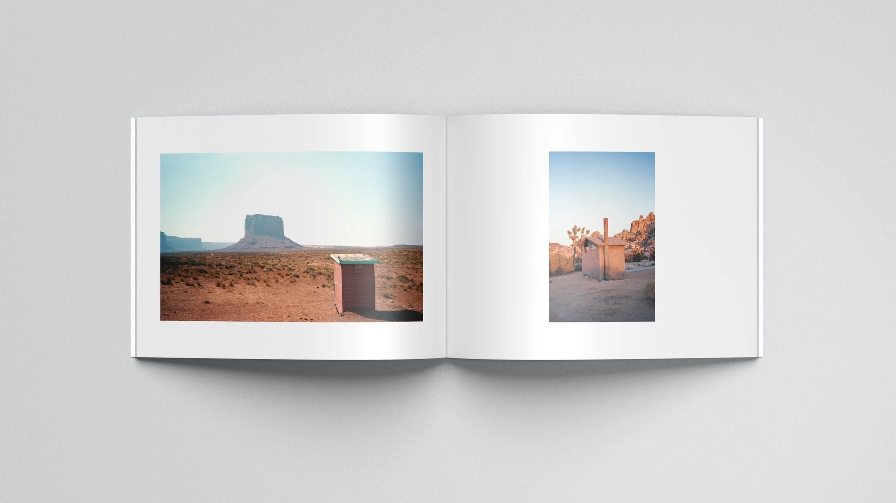
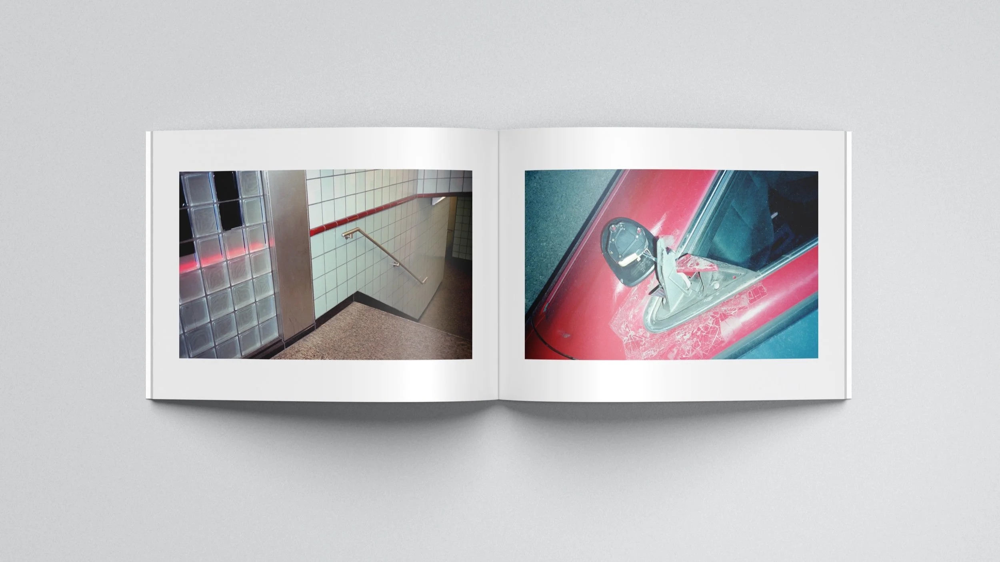
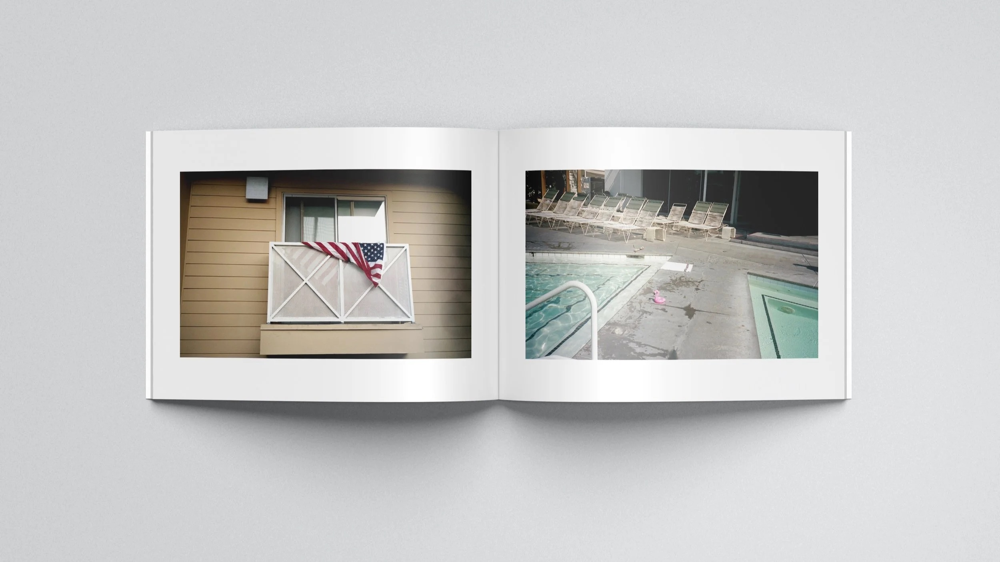
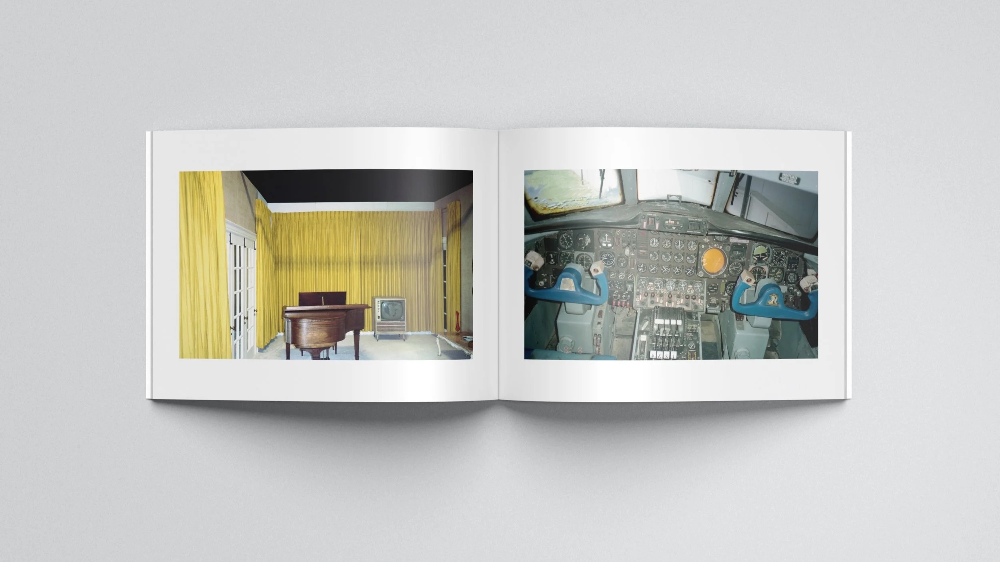
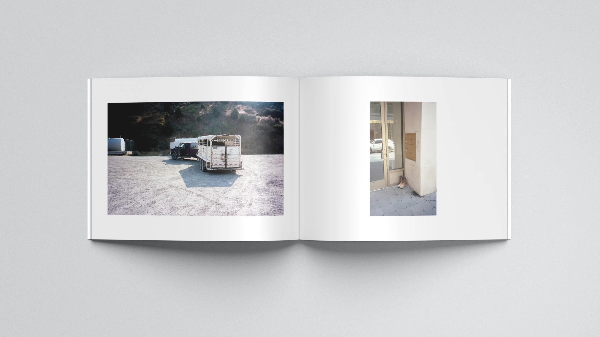
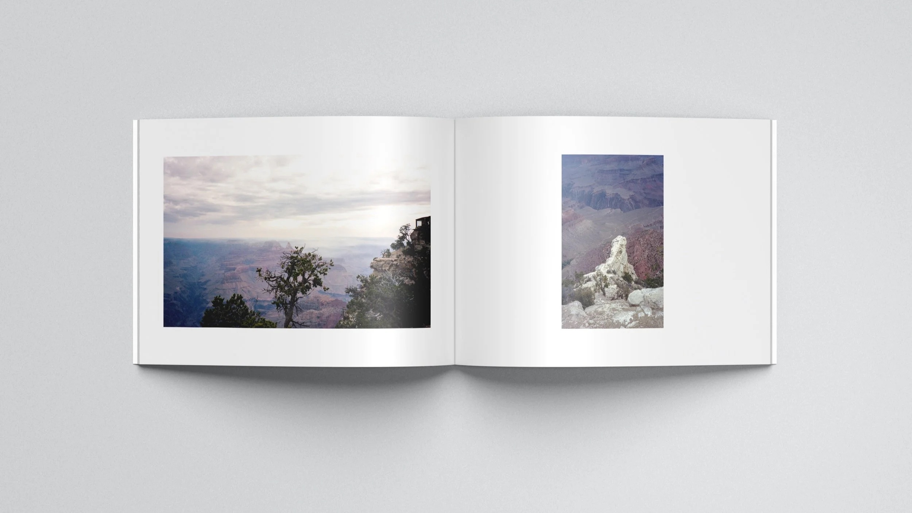

Twenty-3 began as a self-initiated photography project developed during extended travel across the United States. The goal was not documenting destinations, but building a coherent set of diptychs in each environment by mirroring similar subject matter, themes, and visual rhythms. The challenge was working within repetition, allowing meaning to emerge from pattern rather than from singular images or narrative moments.
The result was a small-batch, self-published photo book that functions as a singular documentary-style artifact prioritizing continuity over individual images. Spreads were edited and sequenced to emphasize location and encourage a linear, cover-to-cover experience relative to the order of documentation.
photographed, edited, designed, and published the book independently, overseeing the full process from image-making through final production. The project became a focused exploration of visual storytelling through paired images to represent geographically relational spaces, using contrast and continuity between spreads to suggest narrative without relying on single, definitive moments.